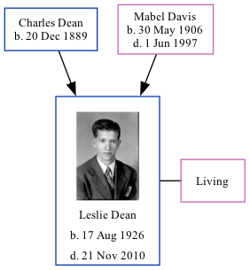

Leslie Dean 1926 - 2010
[ Home ] | [ Calendar ] | [ Surnames Index ] | [ Family History ]The twin brother of Wesley and the son of Charles Dean and Mabel DavisLeslie Dean, the fifth cousin once-removed on the mother's side of Nigel Horne, was born in Lewis, Clay, Indiana, USA on Aug 17, 19261 along with his twin brother Wesley. He was married to Wanda.
Throughout his life, he lived at his birthplace on Apr 1, 19302; and in Coalmont, Howesville, Clay, Indiana, USA on Apr 1, 19403.
He died on Nov 21, 2010 in Terre Haute, Vigo, Indiana1.
Parents
- Charles Otha was born on Dec 20, 1889
- Mabel Charlotte was born on May 30, 1906
Citations
- Social Security Death Index - Findmypast
- US Census 1930 - Findmypast (was age 3 and the son of the head of the household)
- US Census 1940 - Findmypast (was age 13 and the son of the head of the household)
Media
Leslie Dean
Leslie Dean - 2
US Census 1930 - USC/1930/004950597/00346/031
Social Security Death Index - USBMD/SSDI/309223099
Family Tree
Generated by ged2site. Last updated on Nov 13, 2024